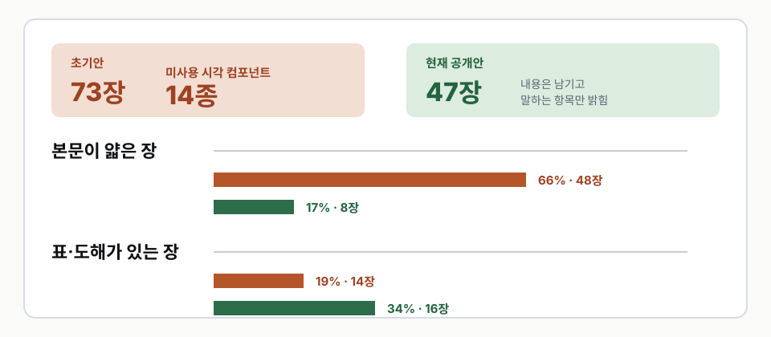
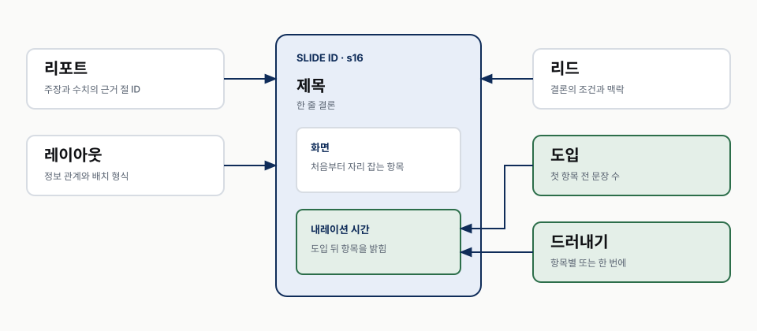
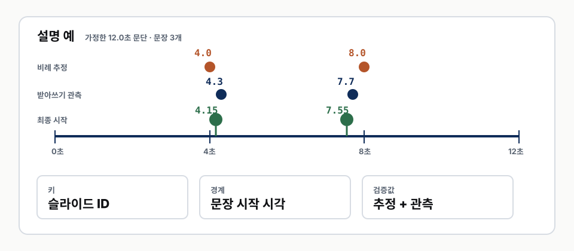
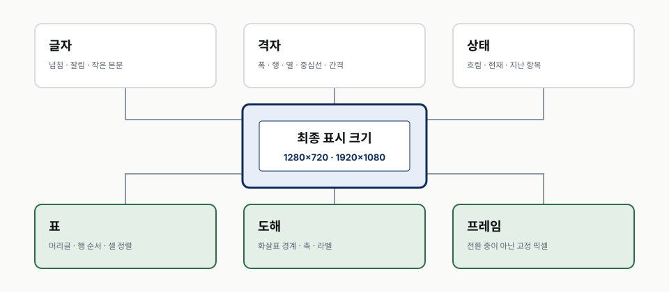
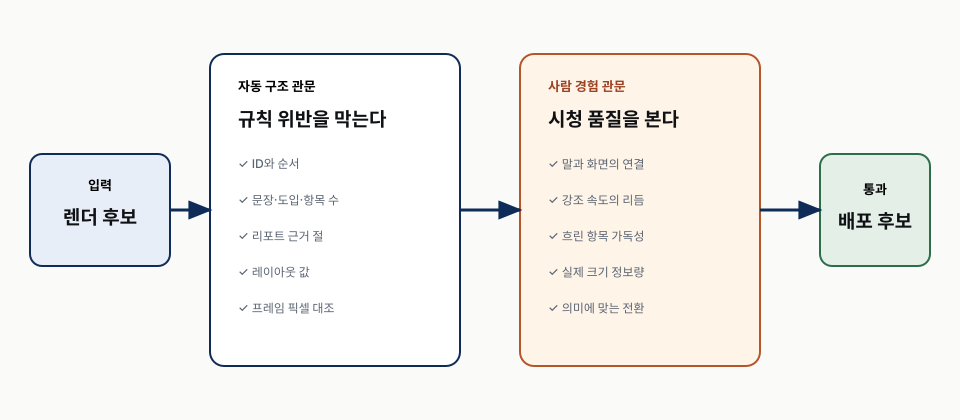
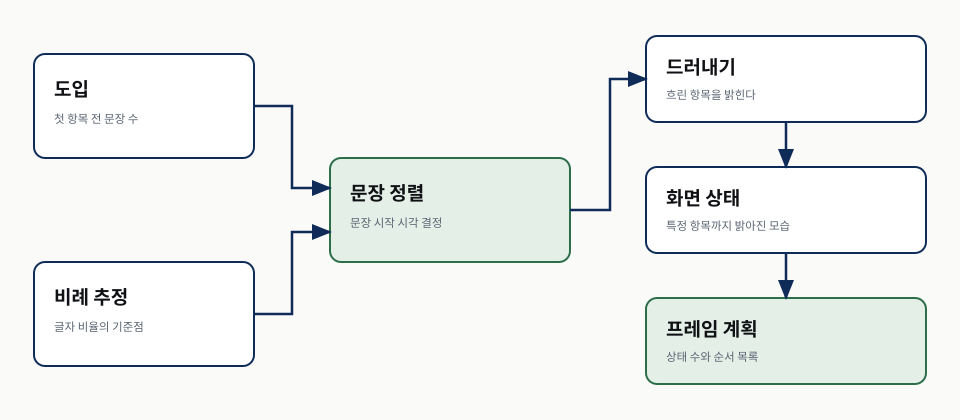
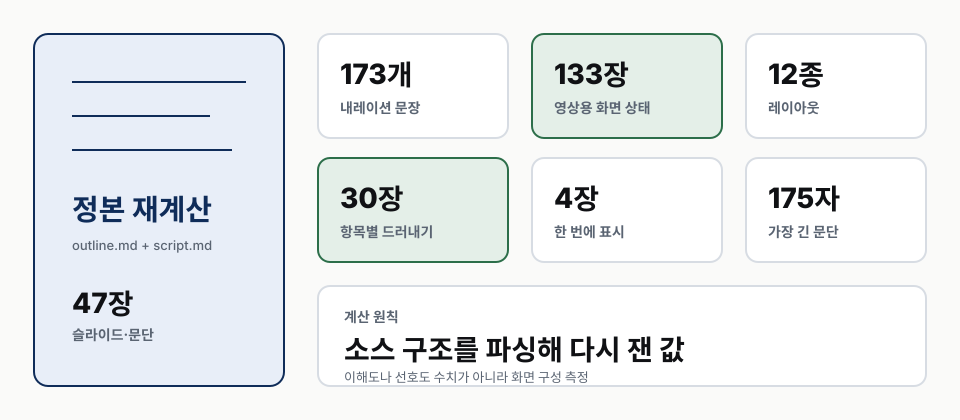
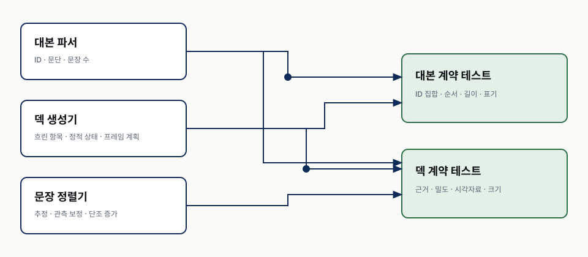

강의 상세 리포트
슬라이드와 내레이션 맞추기
한 장·한 문단·한 오디오를 문장 시작 시각으로 연결하기
요약
한 문장 결론
화면을 비워서 내레이션과의 경쟁을 줄이는 대신, 내용을 처음부터 제자리에 두고 말하는 순간에만 밝힌다. 이때 동기화의 최소 단위는 슬라이드 한 장, 내레이션 한 문단, 오디오 한 조각이다.
이 차시가 답하는 것
| 질문 | 답이 있는 곳 |
|---|---|
| 화면을 비우는 접근은 실제 결과에서 무엇을 잃었는가 | s1 |
| 슬라이드·대본·오디오는 어떤 단위로 묶는가 | s2 |
| 내용을 숨기지 않고 시선만 어떻게 이동시키는가 | s3 |
| 대본을 고쳤을 때 화면 불일치를 어떻게 자동으로 잡는가 | s4 (심화) |
| 문장 시작 시각은 오디오에서 어떻게 얻는가 | s5 (심화) |
| 렌더와 최종 영상에서는 무엇을 눈으로 확인하는가 | s6 (심화) |
| 자동화가 아직 대신하지 못하는 것은 무엇인가 | s7 (심화) |
전체 논리
| 문제 | 계약 | 검증 |
|---|---|---|
| 화면을 비우면 내용이 얇아진다 | 내용은 두고 아직 말하지 않은 항목만 흐린다 | 본문 밀도·시각자료 비율을 잰다 |
| 화면과 대본을 따로 고치면 경계가 깨진다 | 한 장 = 한 문단 = 한 오디오 | ID 집합과 순서를 비교한다 |
| 첫 항목이 너무 일찍 밝아진다 | 문장 수 = 도입 + 항목 수 | 항목별 드러내기 장을 전수 검사한다 |
| 추정 시각은 실제 발화와 다르다 | 문단 오디오에서 문장 시작 시각을 얻는다 | 비례 추정과 가까운 받아쓰기 경계를 결합한다 |
| 소스가 맞아도 렌더가 틀릴 수 있다 | 최종 크기의 정적 프레임을 굽는다 | 화면 상태 전수와 최종 영상 경계를 다시 본다 |
이 차시의 두 층
핵심 본편(core) 은 코드를 몰라도 따라갈 수 있는 설계 원칙이다. 슬라이드와 내레이션을 같은 단위로 묶고, 내용을 숨기는 대신 말하는 항목을 밝히는 데까지 간다.
심화 부록(deep) 은 그 원칙을 자동화할 사람을 위한 독립 층이다. 문장 수 계약, 문장 시작 시각 계산, 프레임 상태 생성, 최종 크기 검증을 하나의 실패 가능한 관문으로 만드는 것이 목표다.
1강에서 넘겨받는 것은 검증된 문단 오디오와 문장 목록이다. 음성 모델 선택과 발음 검증은 이 차시에서 되풀이하지 않는다.
화면을 비우는 해법은 틀렸다
전제는 맞았다
내레이션이 한 내용을 말하는 동안 화면에 다른 긴 문장이 있으면 시청자는 둘 가운데 하나를 놓치기 쉽다. 초기 설계는 이 경쟁을 줄이려고 화면 글자 수를 강하게 제한하고, 카드에서 설명줄을 빼고, 표와 도해를 적게 썼다.
문제는 경쟁을 줄이는 방법이었다. 내용을 줄이자 슬라이드는 간결해졌지만, 실제로 다시 읽을 정보와 시각적 근거도 함께 사라졌다.
같은 1강을 두 번 구성한 결과
아래 값은 학습효과 실험이 아니다. 같은 1강을 구성한 두 산출물의 화면 구성 측정이다. 초기안 값은 당시 측정 원장이고, 현재안은 2026-08-23에 정본 아웃라인을 다시 파싱해 계산했다.
| 측정 | 초기안 | 현재 공개안 | 계산 기준 |
|---|---|---|---|
| 전체 슬라이드 | 73장 | 47장 | 아웃라인의 슬라이드 수 |
| 본문이 얇은 장 | 48장, 66퍼센트 | 8장, 17퍼센트 | lead 또는 section 레이아웃 |
| 표·도해가 있는 장 | 14장, 19퍼센트 | 16장, 34퍼센트 | table 또는 figure 레이아웃 |
| 사용한 레이아웃 | 기록 대상 아님 | 12종 | 서로 다른 레이아웃 값 |
| 영상용 화면 상태 | 기록 대상 아님 | 133장 | 각 슬라이드의 드러내기 단계 합계 |

초기안에는 템플릿이 제공하지만 쓰지 않은 컴포넌트가 14종 있었다. 현재안은 카드 설명줄, 표, 도해, 숫자 블록을 다시 사용했다. 이 비교에서 말할 수 있는 것은 화면이 덜 비고 시각자료 비율이 높아졌다는 것까지다. 이해도나 완주율이 올랐다는 결론은 시청자 데이터 없이 내리지 않는다.
줄이지 않고 시간을 나눈다
현재 설계는 내용을 지우지 않는다. 슬라이드가 열리면 모든 항목이 제자리에 있어 레이아웃은 완성된 상태다. 아직 말하지 않은 항목만 흐리게 두고, 내레이션이 닿는 순간 밝힌다.
이 변화는 정보량과 주의의 문제를 분리한다.
| 맡길 것 | 방법 |
|---|---|
| 무엇을 남길지 | 리포트의 주장·수치·표에서 정한다 |
| 지금 무엇을 볼지 | 문장 시작 시각과 드러내기 상태로 정한다 |
| 나중에 다시 읽을 수 있는지 | 내용은 숨기지 않고 처음부터 문서에 둔다 |
핵심 판단: 슬라이드가 복잡해서 읽기 어렵다면 먼저 내용을 지우지 않는다. 서로 다른 내용이 동시에 주의를 요구하는지 보고, 시간으로 나눌 수 있는지부터 확인한다.
한 장은 한 문단이고 한 오디오다
경계가 같아야 한다
1강에서는 여러 문장을 한 문단으로 합성해야 문장 끝마다 생기는 꼬리 잡소리를 피할 수 있었다. 그러면 2강의 화면도 그 생성 단위를 따라야 한다.
s12 슬라이드 ── s12 내레이션 문단 ── s12 오디오 조각
세 항목의 ID와 순서가 같으면, 슬라이드가 시작할 때 같은 ID의 오디오를 재생할 수 있다. 한쪽에만 ID가 있거나 순서가 다르면 조립 전에 실패시킨다.
세 정본의 역할
| 정본 | 맡는 것 | 넣지 않는 것 |
|---|---|---|
report.md |
주장, 수치, 실패 사례, 근거와 한계 | 영상의 장면 순서 |
outline.md |
슬라이드 제목, 레이아웃, 화면 항목, 리포트 절 ID | 내레이션 전문 |
script.md |
같은 슬라이드 ID의 내레이션 한 문단 | 화면 배치 지시 |
아웃라인과 대본은 따로 쓰는 문서지만 같은 단계에서 함께 파생한다. 슬라이드부터 완성한 뒤 대본을 붙이면, 한 장에 들어갈 말이 두 문단이 되거나 한 문단이 두 장을 넘어간다. 그 상태에서 전환을 맞추려면 오디오를 다시 잘라야 하고 1강의 생성 단위 계약이 깨진다.
리포트가 가장 위에 있다
슬라이드와 대본은 이 리포트에 있는 주장만 압축한다. 화면을 만들다가 새 수치나 설명이 필요해지면 슬라이드에 바로 넣지 않고 리포트를 먼저 보완한다.
이 순서는 출처를 찾기 위한 형식이 아니다. 슬라이드와 대본이 서로 다른 사실을 말하는 것을 막는 상류 계약이다. 각 슬라이드에는 자신이 파생된 리포트 절 ID를 남겨, 나중에 근거를 거꾸로 찾을 수 있게 한다.
한 장의 실제 구성
현재 구현에서 한 슬라이드는 다음 필드를 갖는다.
| 필드 | 역할 |
|---|---|
| 제목 | 한 줄 결론 |
| 레이아웃 | 표·흐름·대비·수치처럼 정보 관계를 표현하는 형식 |
| 리포트 | 근거가 된 리포트 절 ID |
| 화면 | 처음부터 자리를 차지하는 본문 항목 |
| 리드 | 제목의 조건이나 출처를 설명하는 한 줄 |
| 도입 | 첫 항목을 밝히기 전에 지나갈 문장 수 |
| 드러내기 | 항목별로 밝힐지 한 번에 보여줄지 |

핵심 본편은 여기서 완결된다. 화면·말·오디오의 경계를 같은 ID로 맞추고, 내용을 지우지 않은 채 설명하는 순간만 밝히면 된다. 다음 절부터는 그 규칙을 자동으로 지키는 방법을 다룬다.
숨기지 말고 흐리게 둔다
첫 상태부터 레이아웃은 완성돼 있다
항목을 display: none처럼 숨겼다가 꺼내면 뒤의 내용이 밀려 레이아웃이 움직인다. 시청자는
내용뿐 아니라 위치 변화도 다시 따라가야 한다. 대신 모든 항목을 처음부터 배치하고 투명도와
강조만 바꾸면 위치는 고정된다.
| 상태 | 아직 말하지 않은 항목 | 방금 말하는 항목 | 이미 말한 항목 |
|---|---|---|---|
| 화면 처리 | 흐리게 | 가장 밝게 강조 | 밝게 유지 |
| 자리 차지 | 유지 | 유지 | 유지 |
| 시선 역할 | 다음 내용 예고 | 현재 초점 | 지나온 맥락 |
자바스크립트가 없거나 실행에 실패했을 때는 모든 항목이 밝게 보이는 것이 기본이다. 동작 실패가 내용 소실로 이어지지 않게 하기 위해서다. 영상용 프레임은 각 상태를 정적으로 구운 뒤 전환 효과를 끈다. 캡처 순간에 반쯤 흐린 상태가 남는 것을 막는다.
모두 순서대로 밝힐 필요는 없다
표를 한 문장으로 요약하거나 그림 전체를 설명하는 장에 행별 드러내기를 강제하면 대본이
부자연스러워진다. 이때는 한번에 상태를 사용한다.
현재 1강 정본을 다시 계산하면 다음과 같다.
| 화면 방식 | 슬라이드 | 뜻 |
|---|---|---|
| 항목별 드러내기 | 30장 | 도입 뒤 항목을 하나씩 밝힌다 |
| 한 번에 표시 | 4장 | 본문 전체를 한 상태로 설명한다 |
| 단일 상태 레이아웃 | 13장 | 표지·절 구분·마무리·그림처럼 단계가 하나다 |
| 합계 | 47장 | 영상용 정적 화면 상태는 모두 133장이다 |
표 머리글은 드러내기 대상이 아니다. 행을 읽으려면 열의 뜻이 먼저 보여야 하기 때문이다. 그림도 하나의 시각 단위이므로 단계가 하나다.
리드는 첫 문장과 함께 보인다
제목은 결론이고 리드는 그 결론의 조건이다. 리드는 도입 문장과 함께 밝아지고, 본문 항목은 도입이 끝난 뒤부터 하나씩 밝아진다. 이 작은 구분이 없으면 첫 항목이 설명보다 먼저 켜진다.
문장 수가 화면 상태를 결정한다
처음 만든 규칙의 한 칸짜리 오류
초기 드러내기 구현은 문장 1이 항목 1을 밝힌다고 가정했다. 실제 내레이션 문단은 대개 “이제 세 가지를 보겠습니다” 같은 도입 문장으로 시작했다. 그 결과 첫 항목은 소개만 하는 동안 켜지고, 이후 항목도 모두 한 문장씩 당겨졌다.
첫 전수 점검에서 47장 가운데 20장이 어긋났다. 항목이 둘인 장은 빠르게 지나가면 맞아 보였고, 실제로 눈에 띈 일부 장을 고친 뒤에도 같은 구조의 오류가 다른 장에 남을 수 있었다.
계약은 도입과 항목의 합이다
항목별 드러내기를 쓰는 장은 다음 식을 만족해야 한다.
내레이션 문장 수 = 도입 문장 수 + 드러낼 화면 항목 수
도입이 한 문장이면 첫 항목은 두 번째 문장에서 밝아진다. 도입이 두 문장이면 첫 항목은 세 번째 문장에서 밝아진다.
| 도입 | 항목 | 필요한 문장 | 항목이 밝아지는 문장 |
|---|---|---|---|
| 1 | 2 | 3 | 2, 3 |
| 1 | 3 | 4 | 2, 3, 4 |
| 2 | 2 | 4 | 3, 4 |
항목을 다 밝힌 뒤 별도의 꼬리 문장을 두지 않는다. 마지막 항목만 계속 켜진 채 다른 결론을 말하면 화면과 말이 다시 분리돼 보인다. 필요한 결론은 제목이나 리드로 올리거나 다음 슬라이드로 넘긴다.
손으로 문장 번호를 쓰지 않는다
항목마다 문장 번호를 직접 적으면 대본의 도입 문장을 하나 늘릴 때 모든 번호를 다시 고쳐야 한다. 현재 구현은 도입 문장 수와 항목 수에서 번호를 계산한다. 대본의 문장 수가 식과 다르면 슬라이드를 만들기 전에 테스트가 실패한다.
자동 관문은 역할을 나눠 둔다.
| 관문 | 잡는 오류 |
|---|---|
| ID 집합 | 한쪽 문서에만 있는 슬라이드 |
| ID 순서 | 화면과 대본의 순서 불일치 |
| 문장 수 | 도입·항목과 맞지 않는 문단 |
| 리포트 참조 | 존재하지 않는 근거 절 |
| 문단 길이 | 합성 중 뒤가 잘릴 가능성이 커지는 긴 입력 |
한번에로 표시하는 장과 단일 상태 레이아웃은 문장 수 식에서 제외한다. 열거하지 않는
말을 억지로 항목별 문장으로 바꾸지 않기 위해서다.
문단 오디오에서 문장 시작을 찾는다
문장별로 다시 생성하지 않는다
화면 전환 시각이 필요하다고 문장별 오디오를 만들면 1강에서 제거한 문장 끝 잡소리가 되돌아온다. 생성 단위는 문단으로 유지하고, 완성된 문단 오디오 안에서 문장 시작 시각만 구한다.
두 불완전한 근거를 결합한다
현재 정렬기는 두 값을 사용한다.
- 문장 글자 수의 누적 비율로 시작 시각을 먼저 추정한다.
- 받아쓰기 모델이 돌려준 구간 경계 가운데 추정과 가까운 값이 있으면 그쪽으로 당긴다.
둘 중 하나를 절대값으로 믿지 않는다. 글자 수 비례는 실제 쉼과 낭독 속도 변화를 모르고, 받아쓰기 구간은 문장과 일대일이 아니며 경계가 흔들린다. 1강 실험에서는 마지막 낱말의 받아쓰기 구간이 1초 넘게 잡힌 사례도 있었다.
현재 구현의 경계값
아래 값은 보편 법칙이 아니라 2026-08-23 현재 구현의 보수적 제약이다.
| 값 | 현재 설정 | 이유 |
|---|---|---|
| 받아쓰기 경계를 받아들이는 거리 | 추정에서 1.2초 이내 | 멀리 있는 경계는 다른 구간일 가능성이 있어 무시한다 |
| 화면 선행 | 경계보다 0.15초 먼저 | 말을 시작한 뒤 켜지는 느낌을 줄인다 |
| 문장 시작 사이 최소 간격 | 0.6초 | 상태가 겹치거나 지나치게 짧게 번쩍이는 것을 막는다 |
| 마지막 시작 상한 | 오디오 끝 0.2초 전 | 시작하자마자 문단이 끝나는 상태를 막는다 |
첫 문장은 항상 0초에서 시작한다. 이후 문장은 앞 문장보다 늦어야 하고, 마지막 시작은 오디오 길이 안에 있어야 한다. 이 조건이 깨지면 영상 조립으로 넘기지 않는다.
계산 예
12초짜리 문단에 글자 수가 같은 세 문장이 있으면 비례 추정은 0초, 4초, 8초다. 받아쓰기 경계가 4.3초와 7.7초에 있고 둘 다 1.2초 안이라면 화면은 말보다 0.15초 먼저인 4.15초와 7.55초에 바뀐다. 경계가 6초처럼 멀다면 4초 추정을 유지한다.
이 예시는 알고리즘을 설명하기 위한 계산이며 1강의 특정 문단 측정값이 아니다.
정렬 결과가 넘기는 것
문단마다 다음 값을 남긴다.
| 필드 | 뜻 |
|---|---|
| 슬라이드 ID | 화면·대본·오디오를 다시 잇는 키 |
| 오디오 실측 길이 | 마지막 상태가 유지될 경계 |
| 문장 수 | 화면 단계 수와 대조할 값 |
| 문장 시작 시각 | 프레임이 바뀌는 시각 |
| 비례 추정 | 보정 전 기준점 |
| 받아쓰기 경계 | 보정에 사용한 실제 관측 후보 |

3강은 이 정렬 결과를 프레임 계획과 합쳐 영상 타임라인으로 만든다. 프레임 격자 반올림과 영상 인코딩은 다음 차시의 책임이다.
최종 크기로 상태를 전수 확인한다
소스가 맞아도 픽셀은 틀릴 수 있다
ID와 문장 수가 맞아도 제목이 두 줄로 밀리거나, 표가 잘리거나, 흐린 글자가 너무 약해 읽히지 않을 수 있다. 이 오류는 문서 구조만 검사해서는 발견할 수 없다.
그래서 슬라이드를 실제 표시 크기로 렌더한다.
| 용도 | 렌더 크기 | 방법 |
|---|---|---|
| 웹 발표자료 기준 | 1280×720 | 브라우저에서 레이아웃을 그대로 캡처 |
| 영상 마스터 | 1920×1080 | 1.5배 레이아웃으로 다시 래스터화 |
1280×720 이미지를 사후 확대하지 않는다. 글자와 선을 1920×1080 레이아웃에서 다시 그려야 선명도가 유지된다.
슬라이드가 아니라 상태를 본다
현재 1강은 슬라이드 47장이지만 영상 후보는 133장이다. 한 슬라이드 안에서 항목이 세 번 밝아지면 서로 다른 세 화면이기 때문이다. 표지 한 장만 보고 마지막 단계가 잘릴지 알 수 없으므로 모든 상태를 렌더한다.
전수 검사 항목은 다음과 같다.
| 범주 | 확인할 것 |
|---|---|
| 글자 | 넘침, 잘림, 지나치게 작은 본문, 줄바꿈으로 달라진 뜻 |
| 격자 | 같은 수준 카드의 폭·행·열·중심선·간격 |
| 상태 | 아직 말하지 않은 항목, 현재 항목, 지난 항목의 밝기 차이 |
| 표 | 머리글 상시 표시, 행 드러내기 순서, 셀 높이와 정렬 |
| 도해 | 화살표 끝과 대상 경계, 화살촉 앞의 축, 라벨 충돌 |
| 프레임 | 전환 중간 상태가 아니라 완전히 고정된 픽셀 |

한 장에서 결함을 발견하면 같은 레이아웃을 쓰는 형제 장을 전부 확인한다. 공용 CSS나 생성기의 문제라면 한 장만 고쳐서는 같은 결함이 남는다.
최종 영상에서 한 번 더 본다
렌더 후보가 맞아도 조립 순서가 틀릴 수 있다. 최종 영상의 각 전환 경계에서 프레임을 뽑고, 전체 후보 가운데 기대한 프레임과 가장 가까운지 비교한다. 자동 비교가 통과한 뒤에는 실제 재생 크기로 처음부터 끝까지 본다.
이 차시가 3강으로 넘기는 것은 검증된 프레임 파일 자체가 아니라, 다시 만들 수 있는 슬라이드 HTML과 어떤 상태를 어떤 순서로 써야 하는지 적은 프레임 계획이다.
자동화의 경계와 가져갈 순서
자동 검사는 구조를, 사람은 경험을 맡는다
| 자동으로 막을 수 있는 것 | 사람이 최종 판단할 것 |
|---|---|
| ID 누락과 순서 불일치 | 말과 화면이 자연스럽게 맞물리는가 |
| 문장·도입·항목 수 불일치 | 강조 속도가 산만하거나 답답하지 않은가 |
| 리포트에 없는 절 참조 | 흐린 항목도 예고로 알아볼 만큼 보이는가 |
| 허용하지 않은 레이아웃·드러내기 값 | 한 화면의 정보량이 실제 시청 크기에서 적절한가 |
| 최종 프레임과 기대 후보의 픽셀 차이 | 장면 전환이 문장 의미보다 빠르거나 늦지 않은가 |

자동 검사는 규칙을 어긴 것을 빠르게 찾지만, 규칙 자체가 좋은지는 보증하지 않는다. 초기 설계도 글자 수 상한이라는 규칙은 잘 지켰지만 결과 화면의 66퍼센트가 얇았다.
이 순서로 고친다
화면과 말이 어긋났을 때는 아래 순서를 따른다.
- 슬라이드와 대본의 ID·순서가 같은지 본다.
- 그 장이 항목별 설명인지 한 번에 설명할 장인지 결정한다.
- 항목별이면 도입 문장 수와 화면 항목 수를 센다.
- 문장 시작 시각의 비례 추정과 받아쓰기 보정을 비교한다.
- 최종 크기 프레임에서 상태를 눈으로 본다.
- 화면만 고쳐 해결되지 않으면 리포트와 대본의 문장 구조를 함께 고친다.
프레임 시각을 손으로 먼저 옮기면 대본을 수정할 때 다시 깨진다. 상류의 문장 구조와 계약을 먼저 고치고, 계산 가능한 것은 다시 계산한다.
남은 한계
- 현재 문장 분리는 마침표·물음표·느낌표 뒤의 공백을 경계로 본다. 약어와 특수한 표기는 대본 단계에서 피해야 한다.
- 받아쓰기 경계는 실제 관측이지만 정답이 아니다. 1.2초 범위와 0.15초 선행값은 더 많은 차시의 청취 결과로 조정될 수 있다.
- 픽셀 최근접 검사는 내용이 같은지 확인하지만 시청 경험이 좋은지는 판정하지 못한다.
- 드러내기는 항목별 설명에 잘 맞는다. 그림 한 장을 자유롭게 오가며 설명하는 강의에는 별도의 포인터나 애니메이션 계약이 필요할 수 있다.
가져갈 결론: 내용은 리포트에 모두 남기고, 화면·문단·오디오의 경계를 같은 ID로 맞춘다. 항목은 도입 뒤 문장 시작 시각에 밝히고, 자동 관문을 통과한 모든 상태를 최종 크기에서 눈으로 확인한다.
용어
| 용어 | 이 리포트에서의 뜻 |
|---|---|
| 드러내기 | 슬라이드 항목을 숨겼다 나타내는 것이 아니라, 흐린 상태에서 밝히는 것 |
| 도입 | 첫 화면 항목을 설명하기 전에 지나가는 내레이션 문장 |
| 화면 상태 | 같은 슬라이드에서 특정 항목까지 밝아진 정적 모습 |
| 프레임 계획 | 슬라이드 ID별 상태 수와 순서를 적은 목록 |
| 문장 정렬 | 문단 오디오 안에서 각 문장의 시작 시각을 정하는 과정 |
| 비례 추정 | 문장 글자 수가 차지하는 비율로 시작 시각을 추정한 값 |
| 받아쓰기 경계 | 음성인식 모델이 반환한 시간 구간의 시작점 |

재현 근거
현재 정본에서 다시 계산한 값
확인일 2026-08-23. voice-narration의 정본 아웃라인과 대본을 현재 파서로 읽었다.
| 항목 | 값 |
|---|---|
| 슬라이드·내레이션 문단 | 47개 |
| 내레이션 문장 | 173개 |
| 영상용 화면 상태 | 133개 |
| 레이아웃 | 12종 |
| 본문이 얇은 장 | 8개, 17.0퍼센트 |
| 표·도해 장 | 16개, 34.0퍼센트 |
| 항목별 드러내기 장 | 30개 |
| 한 번에 표시하는 장 | 4개 |
| 가장 긴 문단 | 175자 |
voice-narration 정본 아웃라인과 대본을 현재 파서로 다시 읽은 구성 측정이다. 이해도나 선호도 수치가 아니다. 정본에서 직접 작도, 2026-08-23.
구현과 테스트의 역할
| 근거 | 확인한 계약 |
|---|---|
| 내레이션 대본 파서 | 슬라이드 ID, 한 장과 한 문단, 문장 수, 도입 수 |
| 덱 생성기 | 흐린 항목, 정적 상태, 표 머리글, 프레임 계획 |
| 문장 정렬기 | 비례 추정, 받아쓰기 경계 보정, 시작 시각 단조 증가 |
| 덱 계약 테스트 | 리포트 참조, 본문 밀도, 시각자료 비율, 최종 크기 |
| 대본 계약 테스트 | ID 집합·순서, 문단 길이, 금지 표기 |

초기안의 73장·48장·14장 수치는 재설계 당시 남긴 측정 기록을 사용했다. 현재 정본에서 다시 계산한 값과 섞지 않았으며, 이해도나 선호도 수치로 해석하지 않는다.